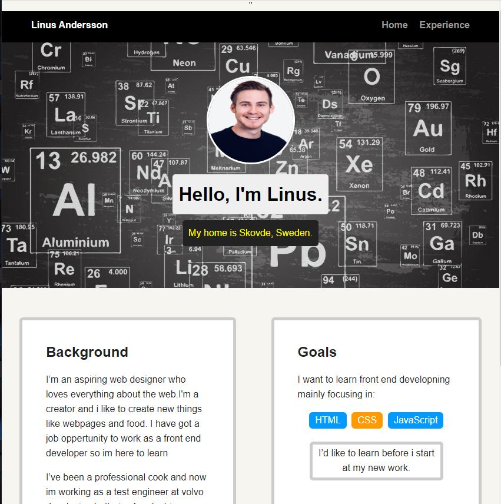
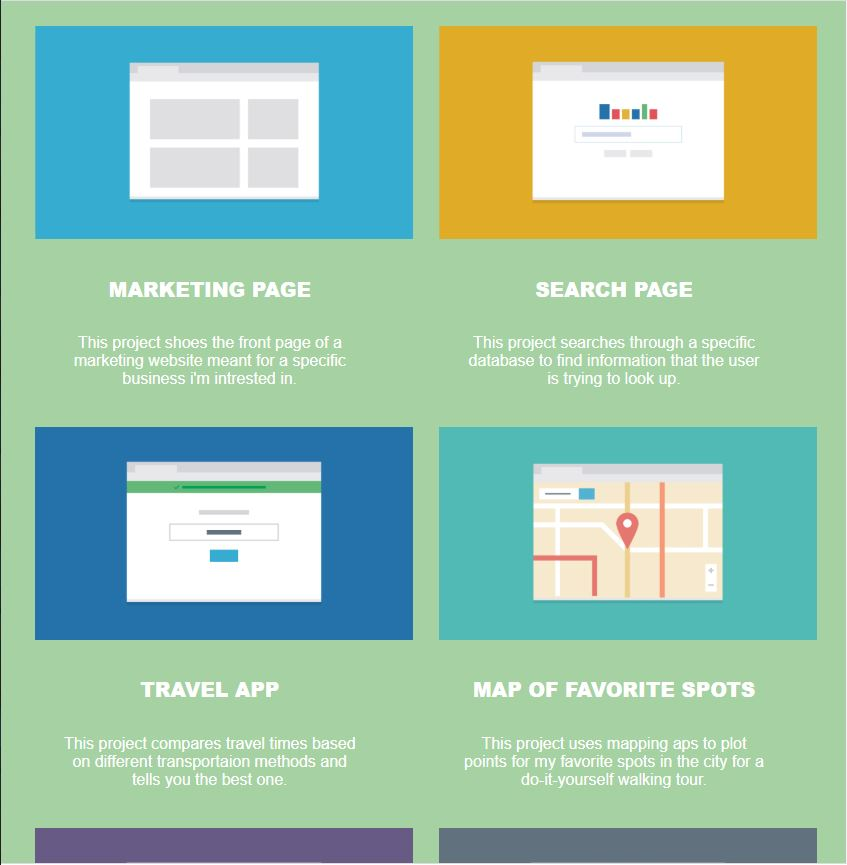
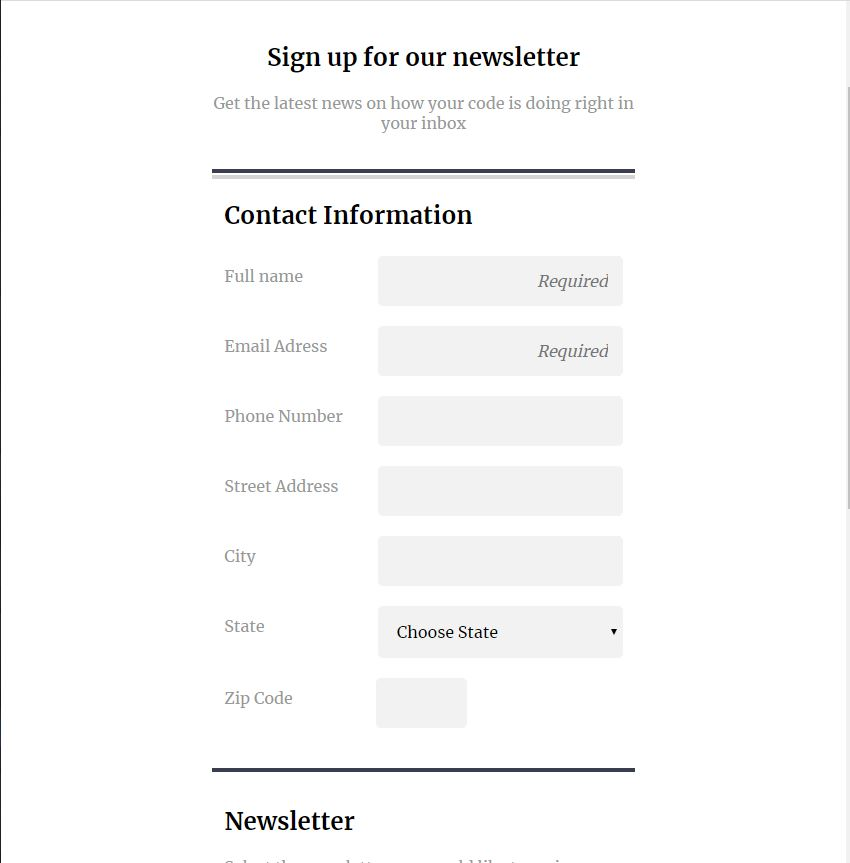
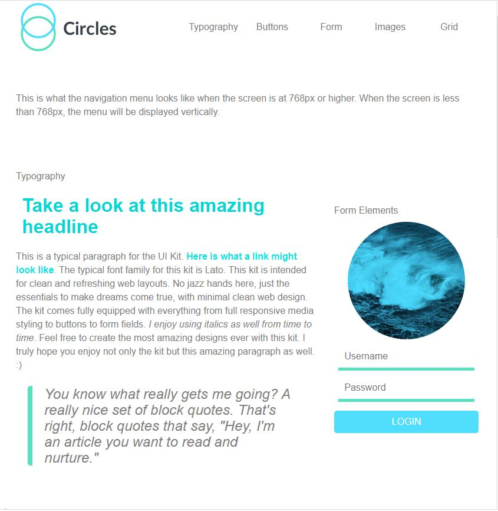
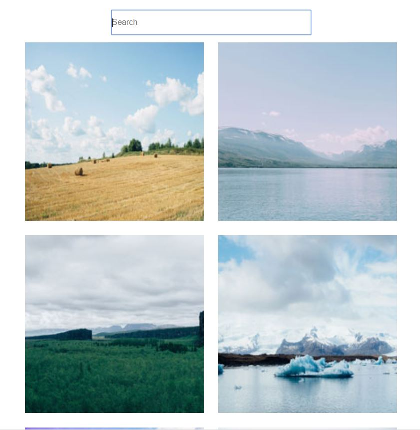
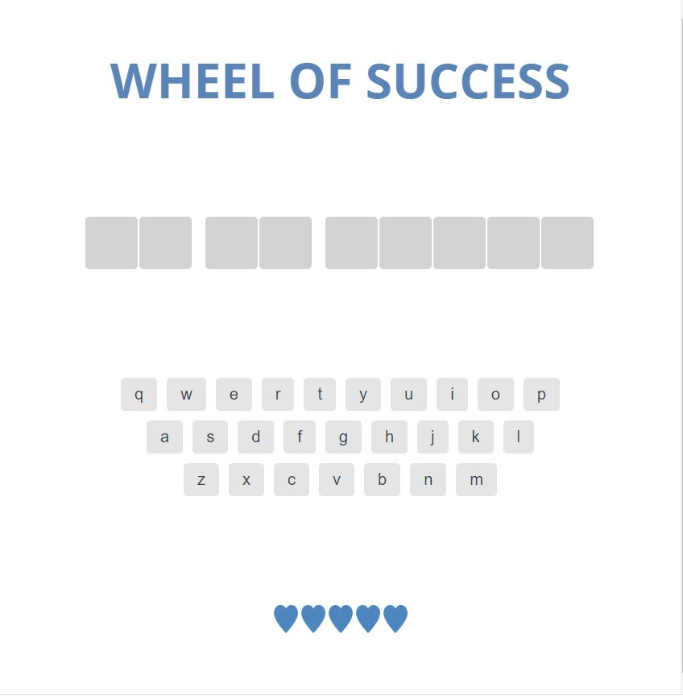
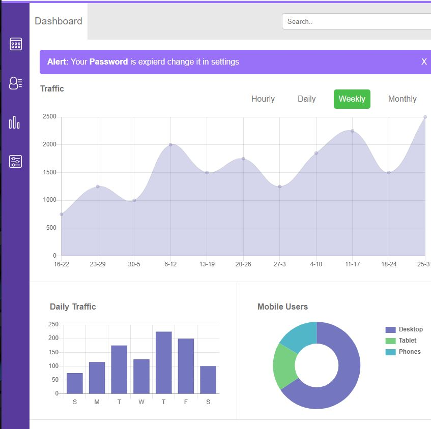
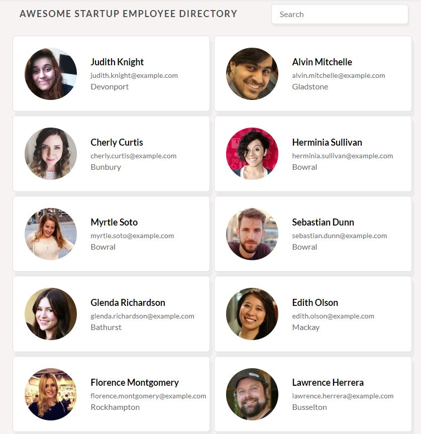

- This was my first project, where i learned the basic skills of HTML and CSS
- My Second project i focused on more HTML and CSS the how to build the site in a responsive layout
- My third project we build a responsive, mobile-first registration form using a variety of HTML form elements
- My Fourth project we started to learn about SASS and createrd a style guide using SASS/HTML and CSS GRID
- My fifth project we did a interactive image galleries are a common feature of many websites, from photo sites to e-commerce applications. Use HTML, CSS and the popular programming language JavaScript to create an interactiv
- My sixth project i created a browser version of “Wheel of Success”, a word guessing game. Used Javascript to come up with a random phrase that players will try to guess by entering different letters into the program.
- My seventh project i builded an interactive dashboard for a web application using advanced web techniques including SVG graphics and JavaScript programming. The project involves creating tables, charts, graphics and other user interface components in a manner that promotes interactivity and usability.
- My eight project i was using JavaScript, and created an employee directory by communicating with a third-party API (Application Programming Interface).